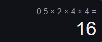

1. Мета роботи
Створити консольний застосунок мовою C#. Вхідні дані ввести з клавіатури. Результати вивести на консоль Використати методи класів Console, Convert в процесі введення та виведення даних. Реалізувати перераховані функції. Виклик функцій здійснити за допомогою меню, застосувавши оператор вибору switch для виклику потрібної функції. Усі завдання варіанта реалізувати в одному проекті Console_Lab1
2. Умова задачі
- 1. Вивести на консоль власні анкетні дані: прізвище, ім'я, вік, група, курс, e-mail. Тіло починає рухатися без початкової швидкості з прискоренням a. Обчислити відстань, яку тіло пройде за час t від початку руху.
- 2. За даними, що введені з консолі, визначити значення виразу, використовуючи математичні функції, і вивести результат на консоль.
- 3. За даними a, b, с, x, значення яких ввести з консолі, обчислити значення функції:
- 4. Написати функцію, яка в залежності від назви місяця (січень, лютий, …) виводить на консоль його порядковий номер.
- 5. Дано натуральне число n і дійсне число x >0. Обчислити суму членів ряду:
3. Теоретичні обґрунтування
У процесі розробки програми використовувалися концепції об'єктно-орієнтованого програмування (ООП), такі як інкапсуляція, модульність та структурованість коду.
Було створено клас Functional, який містить усі функціональні методи, що дозволяють розділити логіку програми на окремі незалежні модулі.
- Метод CalculateDistance() реалізований за допомогою фізичної формули рівноприскореного руху
S = 0.5 * a * t^2.
Для цього використані змінні a та t, які вводяться користувачем через метод ReadDouble(). Результат обчислення виводиться у вигляді тексту.
- Метод ComputeExpression() містить роботу з математичними функціями, такими як
sin, cos та sqrt. Було враховано порядок виконання операцій та дужки для уникнення помилок у формулі.
- Метод CalculateFunctionValue() реалізує розгалужену логіку через умовні оператори
if-else. Він визначає значення функції в залежності від вхідних параметрів.
- Метод GetMonthNumber() демонструє роботу з рядковими даними та конструкцією
switch-case. Це дозволяє ефективно порівнювати введену назву місяця та повертати його номер.
- Метод ComputeSeriesSum() обчислює суму ряду через використання циклу
for. Були враховані особливості обчислення рядів, щоб уникнути ділення на нуль.
Для спрощення введення даних були реалізовані методи ReadDouble() та ReadInt(), які забезпечують перевірку введення та запобігають виникненню помилок у разі некоректного вводу.
4. Структура програми
UML-діаграмa програми:

UML-діаграмa tartMenu():
UML-діаграмa CalculateDistance():
UML-діаграмa ComputeExpression():
UML-діаграмa CalculateFunctionValue():
UML-діаграмa GetMonthNumber():
UML-діаграмa ComputeSeriesSum():
UML-діаграмa ReadDouble():
5. Текст програми
using System;
using System.ComponentModel;
using System.Threading.Channels;
using System.Globalization;
namespace labWork01
{
class Functional
{
// Налаштування формату чисел для правильного відображення десяткового роздільника
NumberFormatInfo numberFormatInfo = new NumberFormatInfo()
{
NumberDecimalSeparator = ".",
};
// Метод для виведення особистої інформації
public void DisplayWelcomeMessage()
{
Console.WriteLine("Last name: Kravchuk");
Console.WriteLine("First name: Maksym");
Console.WriteLine("Age: 17");
Console.WriteLine("Group: 14IPZ");
Console.WriteLine("Course: first course");
Console.WriteLine("Email: maksymkravchuk333@knu.ua");
}
// Метод для обчислення відстані, яку пройде тіло при русі з прискоренням
private void CalculateDistance()
{
Console.WriteLine("Задача №1. Умова задачi: Тiло починає рухатися без початкової швидкостi з прискоренням a. Обчислити вiдстань, яку тiло пройде за час t від початку руху?");
double a = ReadDouble("Введiть a (прискорення 'м/с²'): ");
double t = ReadDouble("Введiть t (час 'с'): ");
double S = 0.5 * a * Math.Pow(t, 2);
Console.WriteLine("Результат: Вiдстань (S) = " + S + " м.");
}
// Метод для обчислення значення виразу, використовуючи математичні функції
private void ComputeExpression()
{
Console.WriteLine("Задача №2. За даними, що введенi з консолi, визначити значення виразу, використовуючи математичнi функцiї, i вивести результат на консоль.");
Console.WriteLine("Для розв'язку задачi потрiбно ввести значення для аргументу a та b.");
double a = ReadDouble("Введiть значення для a: ");
double b = ReadDouble("Введiть значення для b: ");
double x = (Math.Pow(Math.Sin(a), 2) / (1 - Math.Sin(a))) +
(Math.Pow(Math.Cos(b), 2) / (1 - Math.Cos(b))) *
(a + b / Math.Sqrt(a - b));
Console.WriteLine("Результат: x = " + x);
}
// Метод для обчислення значення функції на основі введених параметрів
private void CalculateFunctionValue()
{
Console.WriteLine("Завдання №3. Умова задачi: За даними a, b, с, x, значення яких ввести з консолi, обчислити значення функцiї:");
Console.WriteLine("Для розв'язку задачi потрiбно ввести значення для аргументу a, b, c та x.");
double a = ReadDouble("Введiть a: ");
double b = ReadDouble("Введiть b: ");
double c = ReadDouble("Введiть c: ");
double x = ReadDouble("Введiть x: ");
double result;
if (x < 0 && (b + c) != 0)
result = a * x * x + b * b + c;
else if (x > 0 && b + c == 0)
result = (x - a) / (x - c);
else
result = (x / c) + (x / a);
Console.WriteLine("Результат: f(x) = " + result);
}
// Метод для визначення порядкового номера місяця за його назвою
private void GetMonthNumber()
{
Console.WriteLine("Завдання №4. Умова задачi: Написати функцiю, яка в залежностi вiд назви мiсяця (сiчень, лютий, …) виводить на консоль його порядковий номер.");
Console.WriteLine("Для початку потрiбно ввести назву мiсяця(на українськiй мовi): ");
string nameMonth = Console.ReadLine();
string numPos = "";
switch (nameMonth)
{
case "Сiчень":
numPos = "1";
break;
case "Лютий":
numPos = "2";
break;
case "Березень":
numPos = "3";
break;
case "Квiтень":
numPos = "4";
break;
case "Травень":
numPos = "5";
break;
case "Червень":
numPos = "6";
break;
case "Липень":
numPos = "7";
break;
case "Серпень":
numPos = "8";
break;
case "Вересень":
numPos = "9";
break;
case "Жовтень":
numPos = "10";
break;
case "Листопад":
numPos = "11";
break;
case "Грудень":
numPos = "12";
break;
default:
Console.WriteLine("Такого мiсяця в моїй базi не iснує");
break;
}
Console.WriteLine("Порядковий номер мiсяця " + nameMonth + " " + numPos);
}
// Метод для обчислення суми ряду
private void ComputeSeriesSum()
{
Console.WriteLine("Завдання №5. Умова задачi: Дано натуральне число n i дiйсне число x >0. Обчислити суму членiв ряду.");
Console.WriteLine("Для початку потрiбно ввести значення для аргументiв n та x: ");
double x = ReadPositiveDouble("Введiть значення x (> 0): ");
int n = ReadInt("Введiть значення n: ");
double sum = 0;
for (int i = 1; i <= n; i++)
{
sum += Math.Pow(-1, i) * Math.Pow(x, 2 * i) / ((2 * i + 1) * (2 + Math.Pow(x, 2 * i)));
}
Console.WriteLine("Сума членiв ряду: " + sum);
}
// Метод для зчитування дійсного числа з консолі
private double ReadDouble(string message)
{
Console.Write(message);
double result;
while (!double.TryParse(Console.ReadLine(), NumberStyles.Any, numberFormatInfo, out result))
{
Console.WriteLine("Некоректне значення, спробуйте ще раз.");
Console.Write(message);
}
return result;
}
// Метод для зчитування додатного числа
private double ReadPositiveDouble(string message)
{
double value;
do
{
value = ReadDouble(message);
if (value <= 0) Console.WriteLine("Число має бути більше нуля.");
} while (value <= 0);
return value;
}
// Метод для зчитування цілого числа
private int ReadInt(string message = "Введіть число: ")
{
Console.Write(message);
int result;
while (!int.TryParse(Console.ReadLine(), out result))
{
Console.WriteLine("Некоректне значення, спробуйте ще раз.");
Console.Write(message);
}
return result;
}
// Меню вибору завдань
public void StartMenu()
{
bool isRunning = true;
while (isRunning)
{
Console.WriteLine("Оберіть номер завдання (1-5) або 0 для виходу:");
int choice = ReadInt();
switch (choice)
{
case 1: CalculateDistance(); break;
case 2: ComputeExpression(); break;
case 3: CalculateFunctionValue(); break;
case 4: GetMonthNumber(); break;
case 5: ComputeSeriesSum(); break;
case 0: isRunning = false; continue;
default: Console.WriteLine("Некоректний вибір, спробуйте ще раз."); continue;
}
Console.WriteLine("Продовжити роботу? (y/n)");
isRunning = Console.ReadLine()?.ToLower() == "y";
}
}
// Головний клас програми
class Program
{
static void Main(string[] args)
{
Functional lab01 = new Functional();
lab01.DisplayWelcomeMessage();
lab01.StartMenu();
}
}
}
}
6. Результати виконання
Скріншоти роботи програми:
Завдання 3 має декілька умов тому окремий скірншот із результатом. тут були підібрені значення під всі умови
7. Аналіз достовірності результатів
Завадння 1.
Формула: 0.5 * a * t² - де а - прискоренняБ а t - час
То візьмемо такі числа як 2 та 4, як ми це зробили у програмі.
Використаємо звичайний онлайн калькулятор

Завадння 2.
Візьмемо такі числа як 1 та 0.5, як ми це зробили у програмі.
Використаємо для обрахунку GPT.
Завадння 3.
Через те, що у цьому завданні у нас декілька умов, то ми перевіремо усі.
Для цього використаємо GPT.
Завадння 5.
Для перевірка цього завдання також найкращим та швидким способом перевірки буде використання GPT
Візьмемо ті самі значення, які використовували у програмі.

Якщо розділити 2 на 11 ми отримаємо наближано таке ж число, яке нам видала і програма
8. Висновки
Під час 1 лабораторної роботи я краще почав розбиратися у мові програмування C#.
На практиці побачив та по можливості використовува правила ООП. Отримав гарну практику написання програм для розв'язувань математико-фізичних задач, рівнянь.
Освоїв декілька помилок та на них ж навчився виконувати одні завдання по-іншому(правильно).